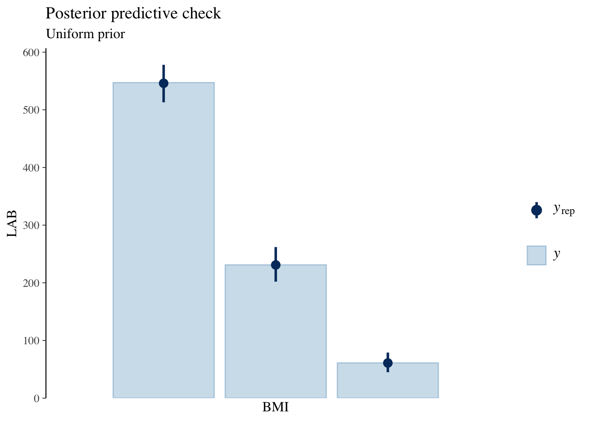
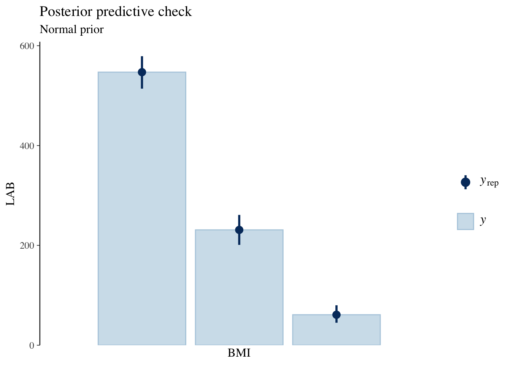
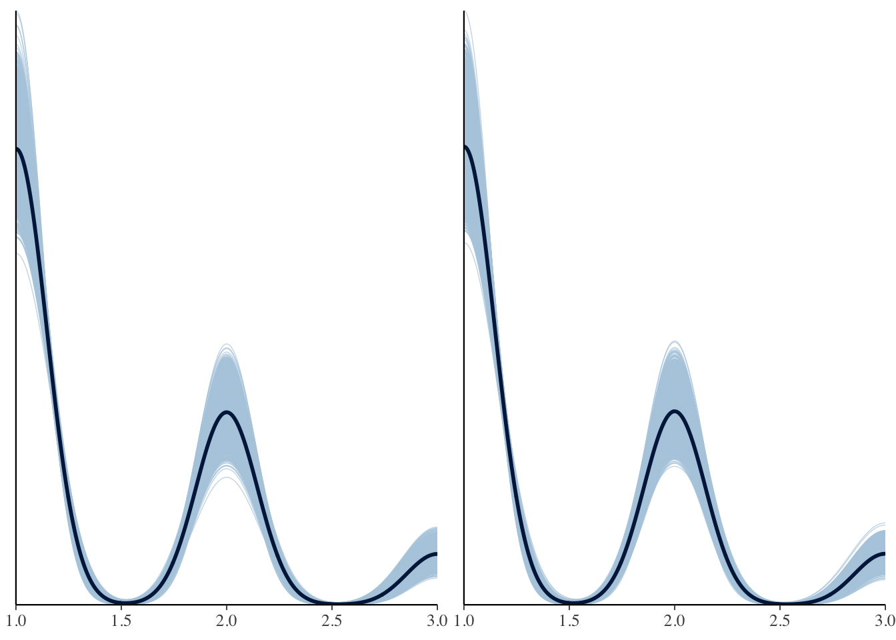
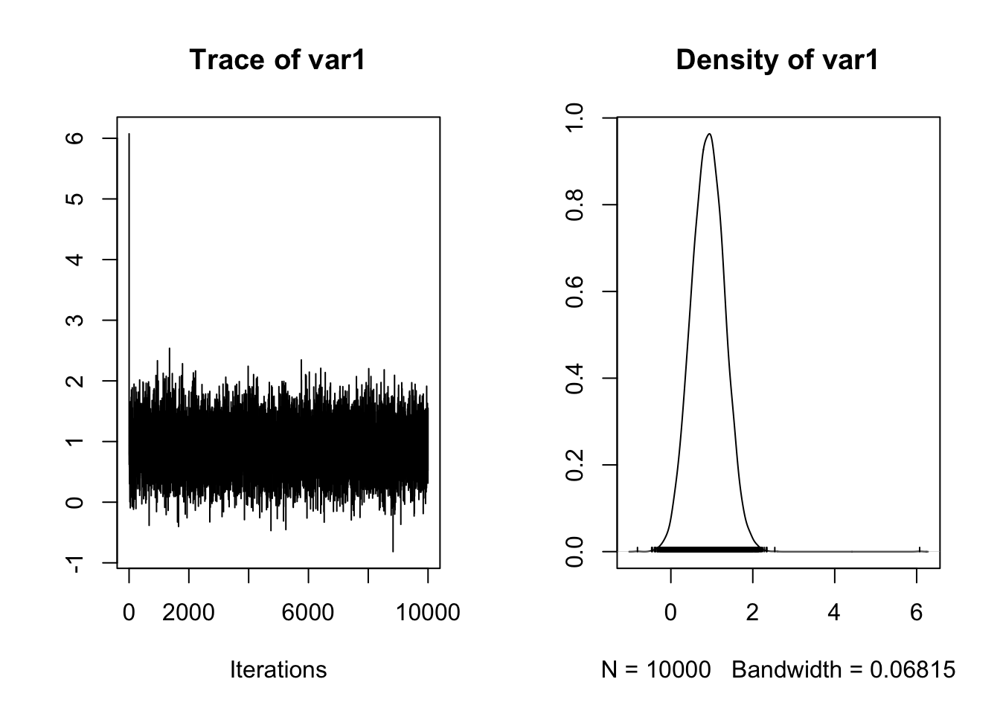
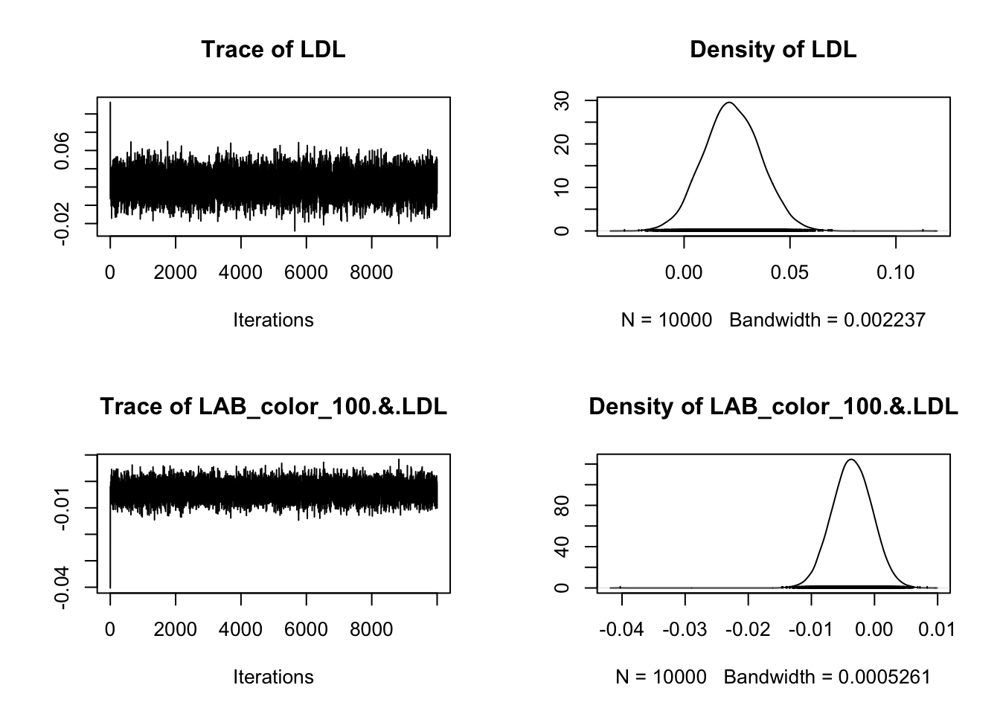

Code
library(readxl)
raw_df <- read_excel("../../Desktop/NurtureOfMentalism/3-BayesianDataAnalysis/Files/hirosaki_data.xlsx")
raw_dfhirosaki_data を用いて
司馬博文
12/09/2024
初めに BMI を３つのカテゴリに分類して解析する．
まずはデフォルトのまま適用してみる．
| prior | class | coef | group | resp | dpar | nlpar | lb | ub | source |
|---|---|---|---|---|---|---|---|---|---|
| b | muobese | default | |||||||
| b | LAB_color_100 | muobese | default | ||||||
| student_t(3, 0, 2.5) | Intercept | muobese | default | ||||||
| b | muunderweight | default | |||||||
| b | LAB_color_100 | muunderweight | default | ||||||
| student_t(3, 0, 2.5) | Intercept | muunderweight | default |
Family: categorical
Links: muobese = logit; muunderweight = logit
Formula: BMIcate_3 ~ LAB_color_100
Data: raw_df (Number of observations: 839)
Draws: 4 chains, each with iter = 5000; warmup = 2500; thin = 1;
total post-warmup draws = 10000
Regression Coefficients:
Estimate Est.Error l-95% CI u-95% CI Rhat Bulk_ESS
muobese_Intercept -2.05 0.31 -2.67 -1.45 1.00 9617
muunderweight_Intercept -1.76 0.48 -2.71 -0.83 1.00 10574
muobese_LAB_color_100 0.30 0.07 0.16 0.44 1.00 10179
muunderweight_LAB_color_100 -0.12 0.13 -0.37 0.13 1.00 9694
Tail_ESS
muobese_Intercept 7171
muunderweight_Intercept 7415
muobese_LAB_color_100 7771
muunderweight_LAB_color_100 7490
Draws were sampled using sampling(NUTS). For each parameter, Bulk_ESS
and Tail_ESS are effective sample size measures, and Rhat is the potential
scale reduction factor on split chains (at convergence, Rhat = 1).結構 obese と underweight で効果が非対称なのがわかる．肥満のリスクは上がるが，「痩せるリスク」というのはあまり変わらないように思える．
係数の事前分布を正規分布に変更した場合を考えてみる．
２種類の事前分布を用いたから，そのどちらが適切かを事後予測チェックで確認する．
Scale for x is already present.
Adding another scale for x, which will replace the existing scale.
Scale for x is already present.
Adding another scale for x, which will replace the existing scale.

ほとんど変わらないように思われる．係数の事前分布を正規分布にするか，一様分布（デフォルト）のままにするかは（予測の観点からは）ほとんど影響がないと見て良いだろう．
BMI を３カテゴリに分けてロジスティック回帰を行うと，モデルの非線型性から変数の選択が少し困難になるため，BMI そのものを回帰することを考える：
Call:
lm(formula = BMI ~ LAB_color_100 * LDL, data = raw_df)
Residuals:
Min 1Q Median 3Q Max
-7.6230 -2.2672 -0.4406 2.1128 16.0498
Coefficients:
Estimate Std. Error t value Pr(>|t|)
(Intercept) 18.396284 1.582141 11.627 <2e-16 ***
LAB_color_100 0.937527 0.405151 2.314 0.0209 *
LDL 0.023515 0.013380 1.757 0.0792 .
LAB_color_100:LDL -0.003691 0.003132 -1.179 0.2388
---
Signif. codes: 0 '***' 0.001 '**' 0.01 '*' 0.05 '.' 0.1 ' ' 1
Residual standard error: 3.4 on 835 degrees of freedom
Multiple R-squared: 0.0441, Adjusted R-squared: 0.04066
F-statistic: 12.84 on 3 and 835 DF, p-value: 3.305e-08LAB_color_100 と LDL は強い共線型性を持つため，この結果はあまり意味を持たないと思って良い．
LAB_color_100 と LDL の２つの変数に関して分散分析を行なってみる．
generalTestBF 関数を用いて，特定の変数のみをモデルに含めた場合のベイズ因子の値を計算することができる：
Warning: data coerced from tibble to data frameBayes factor analysis
--------------
[1] LAB_color_100 : 695269.2 ±0%
[2] LDL : 2925.818 ±0.01%
[3] LAB_color_100:LDL : 610709.4 ±0%
[4] LAB_color_100 + LDL : 481116.4 ±0%
[5] LAB_color_100 + LAB_color_100:LDL : 209337.9 ±0.01%
[6] LDL + LAB_color_100:LDL : 69213.86 ±0.01%
[7] LAB_color_100 + LDL + LAB_color_100:LDL : 125175.6 ±0%
Against denominator:
Intercept only
---
Bayes factor type: BFlinearModel, JZS[1] が最大で，[3] が少し遅れて次点である．LDL より LAB_color_100 が BMI をよく予測することがわかる．
交差項 LDL*LAB_color_100 を入れてもモデルの予測力は上がるわけではないが，邪魔をするわけでもない．LDL, LAB_color_100 には線型な相関があることを踏まえると，LAB_color_100 の二次の効果もあまりないと思われる．
Warning: data coerced from tibble to data frame

LAB_color_100 の係数は \(1\) 前後が推定されているが，そのほかの係数はほとんど \(0\) にまで縮小されていることがわかる．
これもやはり LAB_color_100 以外の変数が追加の予測力を持たないことを示している．